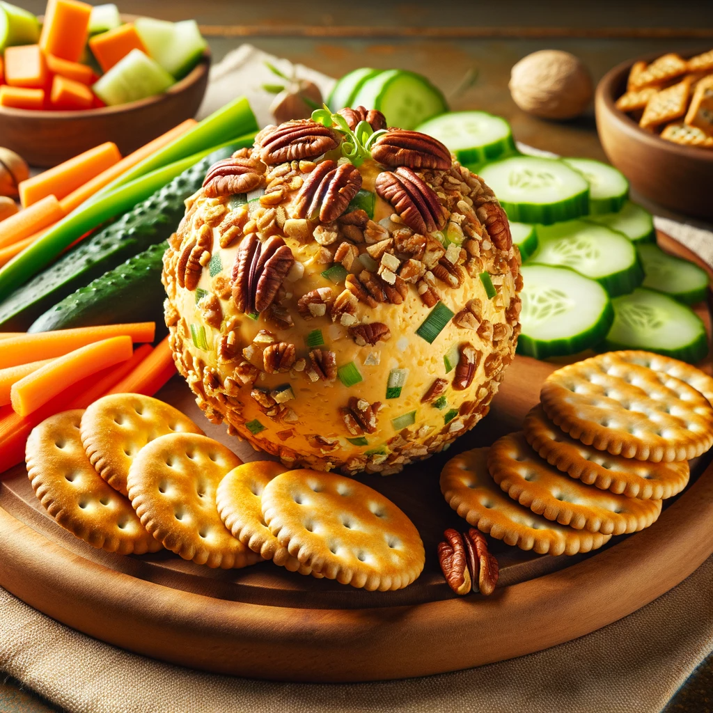

Cheese Balls

Description
Indulge in the savory delight of this vegetarian cheese ball, coated with crunchy pecans and bursting with flavors of cheddar
and cream cheese, elegantly paired with crisp crackers and fresh vegetable slices. A perfect appetizer that marries
simplicity with sophistication, ideal for any gathering.
Ingredients
- 2 cups shredded cheddar cheese
- 1 package (8 oz) cream cheese, softened
- 1 tablespoon finely chopped green onion
- 1 tablespoon Worcestershire sauce
- 1/2 teaspoon garlic powder
- 1/4 teaspoon paprika
- 1 cup chopped pecans or walnuts
- Crackers or sliced vegetables, for serving
Steps
- Combine Cheeses: In a large bowl, mix together the shredded cheddar cheese and softened cream cheese until
well combined.
- Add Flavorings: Stir in the green onion, Worcestershire sauce, garlic powder, and paprika. Mix until all ingredients are
evenly distributed.
- Form the Ball: Once mixed, shape the cheese mixture into a ball using your hands. If the mixture is too soft, refrigerate it for about 30 minutes to
firm up a bit.
- Coat with Nuts: Roll the cheese ball in the chopped nuts until it is completely coated.
- Chill: Wrap the cheese ball in plastic wrap and refrigerate for at least an hour before serving. This allows the
flavors to meld together.
- Serve: Serve your cheese ball with a selection of crackers and sliced vegetables like carrots, cucumbers, and
bell peppers.
- Enjoy! Break out the crackers and dive into this cheesy delight!
Back to Main